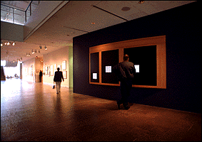

The Minneapolis Institute of Arts
Main Menu ~ Interactive Media Programs ~ Interactive Museum Maps ~ Back ~ Next
Museum Directory
 (c) 33k
Location: Museum Lobby, 1st floor
This program helps you get the most out of your museum visit by letting you quickly access up-to-date calendars of events, maps, and information about current special exhibitions and about the permanent collection at The Minneapolis Institute of Arts. It also contains information about museum facilities and services, from baby changing stations to wheelchair access. You will benefit from spending a moment with the Museum Directory whenever you come to the Institute.